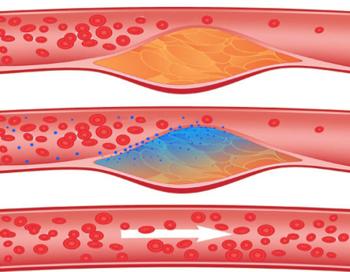
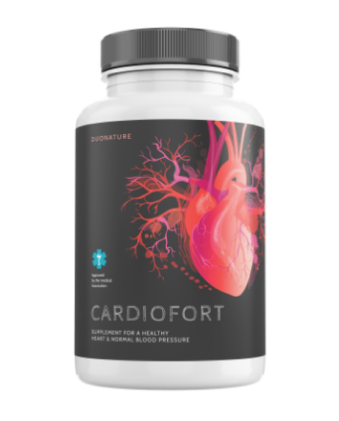

Noticias de salud
Известный кардиолог раскрыл секрет, как добиться отменного здоровья и долготлетия
29.08.2021

Gabriel Robledo Kaiser

новости здоровья
1 COP = 0,00022 EUR
1 COP = 0,014790 DOP
1 COP = 0,00026000 USD
1 COP = 0,0013500 BRL
1 COP = 0,0052400 MXN
1 COP = 0,0020100 GTQ
Доктор Gabriel Robledo Kaiser, признанный лучшим кардиологом крупнейшего города Колумбии Santafé de Bogotá, принял участие в создании уникального препарата против гипертонии. По утверждениям доктора, препарат позволяет полностью очистить сосуды, тем самым избавившись от головной боли, повышенного давления и других симптомов, характерных для гипертонии.
Корреспонденту издания El Tiempo удалось побеседовать с доктором Gabriel Robledo Kaiser, который рассказал об удивительном феномене долголетия.
Доктор Gabriel Robledo Kaiser до сих оперирует
- Доктор, до начала интервью Вы упомянули, что самой главной системой для каждого человека являются сосуды. Расскажите, почему?
- Медицина уже давно доказала, что износ и другие проблемы с кровеносными сосудами являются причиной появления широкого спектра заболеваний. Статистика показывает, что отложения холестерина приводят к повышенному давлению, могут вызвать инсульт и сердечный приступ. Что самое неприятное: такие отложения провоцируют обострение хронических заболеваний.
Проблемы с сосудами – это всегда высокий риск. Они влияют на организм человека и его продолжительность жизни. Общая протяженность кровеносных сосудов в организме взрослого человека составляет 100 000 километров. Представьте себе топливопровод, покрытый изнутри ржавчиной и отложениями. Он не сможет обеспечить равномерную циркуляцию топлива к двигателю. Проходимость в нем снижена, да и само топливо становится низкокачественным.
Аналогичная ситуация и с кровеносными сосудами, которые должны доставлять «топливо» в сердечную мышцу. В них откладываются разные вещества, что способствует увеличению давления. То есть, загрязненные сосуды являются основной причиной гипертонии. Как я ранее упоминал, опасность заключается и в обострении сопутствующих заболеваний, ведь кровеносные сосуды соединяют все жизненно важные органы человека.
Отмечу, что закупорка сосудов – самая распространенная проблема у 89% пациентов старше 40 лет.
Образование атеросклерозной бляшки

Атеросклероз — хроническое заболевание артерий эластического и мышечно-эластического типа, возникающее вследствие нарушения липидного и белкового обмена и сопровождающееся отложением холестерина и некоторых фракций липопротеинов в просвете сосудов. (прим. wikipedia)
То есть происходит постепенное заражение сосудов. Если вы никогда не мыли сосуды и вам за 40, ваши сосуды уже сильно забиты. Очень скоро это негативно скажется на вашем здоровье, если оно еще не было затронуто.
- Как обычному пациенту определить, есть ли у него закупорка сосудов?
- Есть ряд симптомов, прямо или косвенно связанных с нарушением кровообращения в сосудах. Очень прошу, обратите на них внимание, ведь от этого зависит не только здоровье, но и продолжительность жизни:
- Эпизодические головные боли разной интенсивности;
- Ощущение усталости;
- Ухудшение зрения и слуха;
- Нарушение сна (даже одна бессонная ночь может стать сигналом от организма);
- Одышка и стенокардия;
- Проблемы интимного характера;
- Побледнение кожных покровов на ногах;
- Боли в мышцах и суставах.
Следует помнить, что закупорка кровеносных сосудов – быстрый процесс . Даже если в молодости пациент активно занимался спортом и отлично себя чувствовал, то после 40 лет эластичность стенок сосудов значительно снижается.
Моя практика показывает, что с момента проявления первых симптомов до появления серьезных заболеваний может пройти всего месяц. В этом и кроется главная опасность гипертонии, которую многие недооценивают. Прием жирной пищи, курение, прием алкоголя даже в незначительном количестве значительно ускоряет процесс закупорки сосудов.
- Вы упоминали, что закупорка сосудов может привести к проявлению сопутствующих заболеваний. Не могли бы Вы рассказать, как это происходит?
- Да, конечно. В качестве примера я приведу таблицу, которую показываю своим пациентам.
Причина
Следствие
Больные сосуды ног
Появляется варикоз, вены на ногах расширяются. Пациент чувствует тяжесть в ногах, чувство жжения или холода. Отечность ног или появление трещин на пятках.
Закупоренные сосуды в печени
Закупоренные сосуды в печени Проявление гепатита, появление отрыжки после еды, привкус горечи во рту.
Нарушение кровообращения в суставах
Боли в суставах, «выкручивание», неприятные ощущения в запястьях и стопах, грыжа, остеохондроз.
Закупорка сосудов глаз
Появление черных точек перед глазами, повышенный риск развития катаракты, ухудшение зрения.
Блокировка мозгового кровообращения
Блокировка мозгового кровообращения Шум в ушах, головокружение, нарушение памяти.
Особое внимание уделю гипертонии. Многие удивятся, но гипертония может проявляться и в виде постоянного желания употреблять пищу. Объясню с научной точки зрения: забитые сосуды не могут доставить важные питательные вещества во внутренние органы человека. Они же посылают сигнал о недостаточности веществ в мозг.
А мозг, в свою очередь, требует от человека калорий.Как результат – человек постоянно ест и даже не понимает, почему так происходит. А разгадка кроется в грязных сосудах и гипертонии! Именно по этой причине людям с избыточным весом следует обратить особое внимание на симптоматику. Не стоит думать, что именно вас обойдет эта проблема. После 35 лет в организме человека происходят необратимые изменения, и они всегда, без исключения, касаются кровеносных сосудов.
- Как предотвратить закупорку сосудов?
Моя главная рекомендация – обязательная чистка сосудов 1 или 2 раза в год. Это позволит предотвратить развитие заболеваний, снизить вероятность проявления гипертонии, а заодно и продлить свою жизнь.
- Расскажите, как правильно чистить сосуды?
- Раньше использовались хирургические методики очистки, но сегодня их эффективность оценивается международным медицинским сообществом в 20%-30%. К тому же хирургическое вмешательство может вызвать осложнение и массу побочных эффектов. Что касается фармакологии, то еще несколько лет назад использовались лишь таблетки и инъекции. Из-за отсутствия эффективной альтернативы они прописывались пациентам. Такие средства работали, но они способствовали только расширению сосудов, а не их очистке. То есть, они боролись со следствием, а не с причиной.
- Вы хотите сказать, что полностью очистить кровеносные сосуды невозможно?
- Медицина и фармакология постоянно развиваются. Эксперты и ученые открывают новые методики лечения, создают новые препараты. Если мы говорим о проблемах сосудов и гипертонии, то из последних эффективных разработок стоит отметить CardioFort. Сегодня он является единственным препаратом с подтвержденной клинической эффективностью.
Препарат CardioFort сочетает в себе безопасность и эффективную очистку: его применения позволяет очистить и крупные артерии, и тонкие капилляры. Более того, регулярное применение в течение 2 месяцев позволяет вывести всю грязь и токсины, которые накопились в кровеносных сосудах за всю жизнь.
В течение нескольких лет группа экспертов проводила клинические исследования. Они показали, что в результате действия препарата CardioFort происходит:
- СНИЖЕНИЕ ХОЛЕСТЕРИНА
- ПОВЫШЕНИЕ ЭЛАСТИЧНОСТИ СОСУДОВ
- УМЕНЬШЕНИЕ ГОЛОВНЫХ БОЛЕЙ
- СНИЖЕНИЕ АППЕТИТА
Через 1,5 месяца применения КардиоФорт растворяет и выводит из организма до 3800 г холестериновых бляшек.
До
Действие CardioFort
После
- Удивительно! А что происходит внутри организма после приема препарата?
- Все стадии действия CardioFort полностью изучены. Сначала препарат начинает взаимодействовать с водой. В результате взаимодействия компонентов, входящих в состав препарата, происходит активация натуральных экстрактов. Далее в организме человека происходит оксигенация – происходит насыщение кислородом и влагой. Этот процесс позволяет нейтрализовать холестериновые бляшки в сосудах и нормализовать естественный кровоток. Кстати, в большинстве стран Минздрав официально относит CardioFort к категории препаратов для чистки сосудов.
- Могут ли жители Колумбии позволить себе купить такой эффективный препарат?
- Да, могут. Есть программа льгот, разработанная Минздравом совместно с Национальным центром медицинских исследований сердечно-сосудистой хирургии и производителем CardioFort. Наш центр запустил льготную программу в рамках проекта телемедицины (Интернет-медицина).
- Что нужно сделать, чтобы участвовать в этой программе?
До 26.08.2021 или до доставки последней версии CardioFort. Несмотря на отсутствие рекламы на радио и телевидении, люди передают информацию друг другу и рекомендуют этот препарат своей семье и друзьям. Мы были удивлены, узнав, что так много людей знают и говорят о нашей любимой программе. В последний день скидок на CardioFort - 26/08/2021 включены. Поэтому рекомендую заказывать КардиоФорт, в этом году повторения программы не будет.
На 26.08.2021 по остальному лоту по сниженной цене:
17 шт.
Официальная форма заказа
№2341 от 20.07.2021
Заказать CardioFort по сниженной цене:
Чтобы заказать “CardioFort” введите ниже свои имя, номер телефона и нажмите кнопку ”Заказать”
*Срок специального предложения истекает 31.08.2021
Комментарии
Alejandro Saun Покупал CardioFort своей жене. Страдает от гипертонии уже 8 лет. С момента начала приема прошло два месяца, давление постепенно стабилизируется.
4
4 августа 2021
Daniale Alejandro, а сколько лет вашей жене? У мужа тоже проблема с гипертонией, никакие средства не помогают. Хотела спросить, препарат можно принимать в любом возрасте?
4 августа 2021
Alejandro Saun Да, я консультировался с лечащим врачом своей жены. Никаких противопоказаний по возрасту нет.
5 августа 2021
Daniale Спасибо за ответ. А в комплекте с препаратом есть инструкция, как его принимать?
5 августа 2021
Alejandro Saun Daniela, да, есть. Для лечения рекомендуется принимать 30 капель, разбавленных в стакане воды, после еды. Могу сказать, что я сам принимаю по 20 капель, но у меня не было таких проблем со здоровьем, как у моей жены.
5 августа 2021
Maria Alejandra Мой доктор тоже говорил, что у меня проблемы с сосудами. Из-за этого началась мигрень. По совету знакомой приобрела CardiFort. Пока принимаю всего 3 недели, заметны облегчения. Жду полного окончания курса.
0
23 августа 2021
Paula Пожалуйста, подскажите, как правильно принимать препарат – утром, днем или вечером?
23 августа 2021
Gabriela Paula, в инструкции указано принимать по 30 капель после еды. Время суток не имеет значения. Здоровья Вам!
23 августа 2021
Paula Gabriela, спасибо! Собираюсь купить препарат, волнуюсь, хватит ли дозировки.
24 августа 2021
Maria Camila У меня дочь живет в Германии, рассказывала про этот препарат. Не думала, что он у нас появится.
Жду полного окончания курса.
1
30 августа 2021
Cristian Слышал, что препарат и в Бразилии недавно появился. Раньше заказывал только оттуда, но по очень высокой цене.
31 августа 2021
Juan Felipe Кто-нибудь принимал CardioFort с тахикардией?
0
31 июля 2021
Katherine Да, я принимала. Никаких побочных эффектов не заметила.
31 июля 2021
Javier Juan, единственное противопоказание – это индивидуальная непереносимость компонентов, которая встречается у 1% пациентов. Говорю, как практикующий кардиолог.
31 июля 2021
Antonia Могу поделиться своим опытом приема препарата. Через месяц начала замечать, что память улучшилась: хотя бы перестала забывать все подряд. После полного курса исчезли боли в суставах. Теперь планирую пройти и второй курс, потом напишу, какие изменения произошли.
23
12 августа 2021